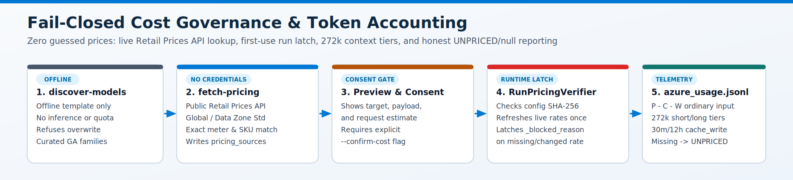

Check prices before AI: consent, estimates and data boundaries
Part 7 of 8 · For developers and school IT

“What did this cost?” and “May we send these images?” are different questions. A responsible workflow must address both before a paid request, and preserve enough evidence to explain its estimate afterwards.
The grader checks required rates before the first paid request of each new run. Public lookup covers a curated set of supported text/vision families. Other operations need current manually reviewed evidence. This article uses saved price journals and cost summaries; no new model request or price refresh was made to write it.
Step 1: Separate preview, price verification and consent
A preview should show intended work without inference. It is not consent to execute. The relevant execution additionally needs --confirm-cost, and a configured deployment still needs verified rates.
Suggested teacher/IT prompt
Show the target resource and deployments locally.
Explain which artifacts will leave the machine and preview the work.
Do not make paid calls, accept changed rates or send reports.
Do not put the private resource details into public screenshots. The article's examples deliberately use placeholders.

Figure 1. Code-authored decision diagram, not a captured provider response.
The order of authorization and checking is an application workflow; the invariant is that neither missing consent nor a failed price check may be bypassed to make the paid request.
Step 2: Understand what public lookup retrieves
The documented lookup command is:
handwriting-grader fetch-pricing \
--region eastus --deployment-type global-standard
To price aliases into a new private configuration:
handwriting-grader fetch-pricing \
--region eastus --deployment-type global-standard \
--model-config /private/config.yaml \
--write-config /private/priced-config.yaml
These are reproducible procedure examples, not newly executed transcripts. The saved journals provide actual evidence of earlier successful checks.
The public Retail Prices API request does not need student data or Azure credentials. The application selects exact matching meters, checks units and effective dates, and retains provenance rather than guessing a family rate.
Use the real ARM region and billing type. Public USD retail rates are estimates, not your institution's negotiated bill.
Step 3: Inspect saved evidence without publishing the private resource
The existing grading price journal contains two text-operation checks with retail evidence. Rubric and region journals each contain a text check. The analysis journal contains both text and image checks, with retail and manual evidence represented.

Figure 2. Selected actual journal fields. Resource identifiers, private paths and unrelated configuration are excluded.
At the transport boundary the shared client calls:
self._require_prices(model, tools=tuple(config.tools or ()))
That precedes image encoding and the Responses SDK request. A shared run verifier checks the configuration fingerprint, binds the intended request to reviewed configuration, and compares required fresh rates with saved reviewed rates. Failures latch the run as blocked.
What is not captured here: a fresh changed-price/network-failure execution. Those blocking branches are source behavior, not fabricated console output.
Step 4: Read the cost report's scope before quoting a number
The saved grading/cost_summary.json reports:
{
"total_calls": 26,
"total_prompt_tokens": 26464,
"total_candidate_tokens": 15234,
"total_images": 6,
"total_cost_usd": 0.33436,
"unpriced_calls": 0
}

Figure 3. Actual stored summary, including its broader accumulated phase scope.
Despite its location under grading/, this file includes rubric extraction, region suggestions, OCR, batch grading, AI analysis and image generation. US$0.33436 is not the price of grading four students alone.
The stored batch-grading phase is five logical calls and US$0.022736. The stored infographic phase is six calls and US$0.25453. These figures describe this saved accounting snapshot, not a promise about another exam.
Failed responses and individual SDK retries are not fully represented in the grader's log. Do not turn logical calls into an authoritative count of billed attempts. Reconcile with Azure billing.
Step 5: Treat image generation as a separate pricing case
The independent Azure image-generation skill has its own package and environment. It is not a grader dependency.
Its current image-pricing gate checks manual evidence, not a live image-price lookup. Evidence must match the model/resource, region, supported billing mode, USD units, current UTC verification date, requested size and quality. The program validates the attestation; it cannot establish that a person actually reviewed the correct prices.
The separately created workflow illustration used one image request and recorded an estimated US$0.04312. That separate run is not included in the grader's stored US$0.33436 snapshot. The earlier banner prototype used one request (estimated US$0.00713). The current eight banners instead use eight distinct, separately generated artworks, with no automatic retries and a combined estimate of US$0.06394. Exact typography and brand marks are added locally. Submitted prompts and provenance distinguish these conceptual illustrations from observed grader outputs. None of these publication-art costs belong to the grader's stored snapshot; estimates are not invoices.
Step 6: Keep consent and data governance visible
Answer crops and selected metadata can leave the local machine during inference. Optional analysis and hosted tools have their own payloads and cost implications. Local previews, reports and offline statistics should not be described as paid AI operations.
Keep credentials outside configuration committed to source control. Keep private review URLs, journals, scans and delivery settings out of public article assets. store=False is not a substitute for institutional review of access, retention, contractual terms and student-data handling.
The output you want is a traceable estimate with known scope—and a clearly blocked request when essential evidence is missing—not an attractively formatted zero.
Next: turn saved reports into a measured school pilot.
Implementation references: price verification and usage accounting.